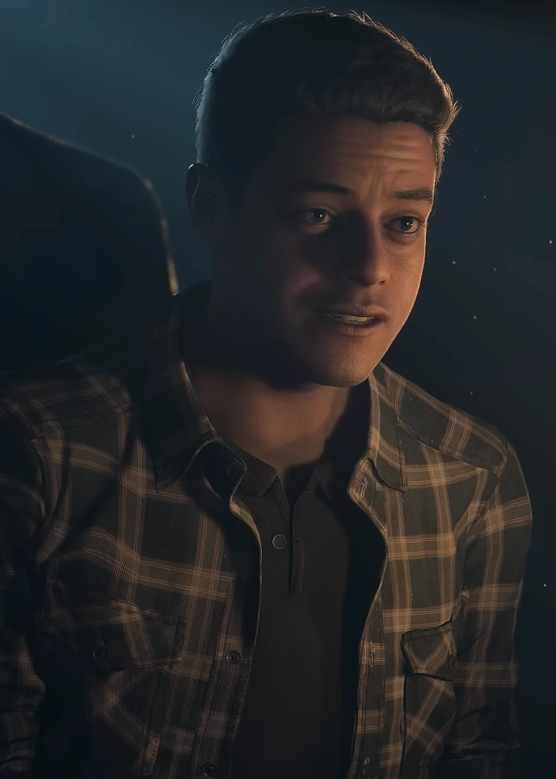

Josh reintroduces the rest of the crew, and kicks of the night with some... interesting... jokes surrounding Chris and Ashley's relationship. He then disappears after playing with the ouija board.
Josh does his stuff as the psycho.
Once he is revealed, Josh is locked up outside by Chris and Mike. he then escapes into the mines where he is driven towards insanity. .
Emily wakes up dangling from a wire of the buring tower upside down. Once she swings over to a nearby ledge, she begins to explore, coming in contact with the stranger who gives her flares. Emily then gets into the best chase scene in the whole game with Handigo before escaping off a broken zipline into the woods. (Please watch this chase scene if you havent already its literally beautiful and shes so amazing.) After this, Emily regroups with the group where she has another iconic line (if she gets bit by Handigo), "Understand the palm of my hand." She then follows Sam until the end of the game.
Josh is... fine. I know a lot of people like him for his complex narrative, but I think the fact that you cant save him in the original sends a bad message. Luckily, this is fixed in the remake, but I still struggle with enjoying his personality and actions in the game.
Emily's Score: 10/10
